Kilimanjaro forest trail
Photo: Jorge Láscar from Australia · CC BY 2.0 · Photographed 2009-03-17.
Resized and re-encoded to WebP for loading speed; CSS may crop the display. The adapted image remains available under CC BY 2.0.
REAL IMAGES. CLEAR SOURCES.
Selected safari and existing project photographs were supplied for David Explora. Additional licensed destination images below illustrate Kilimanjaro, Zanzibar, the northern parks and the Rufiji region. Independent travelers in these photographs are not presented as David’s customers.
Images do not promise an exact vehicle, lodge, wildlife sighting or community venue. Captions distinguish actual places from regional and activity illustrations. Your written itinerary confirms the actual arrangements.
Photo: Jorge Láscar from Australia · CC BY 2.0 · Photographed 2009-03-17.
Resized and re-encoded to WebP for loading speed; CSS may crop the display. The adapted image remains available under CC BY 2.0.

Photo: Jorge Láscar from Australia · CC BY 2.0 · Photographed 2009-03-18.
Resized and re-encoded to WebP for loading speed; CSS may crop the display. The adapted image remains available under CC BY 2.0.

Photo: Jorge Láscar from Australia · CC BY 2.0 · Photographed 2009-03-20.
Resized and re-encoded to WebP for loading speed; CSS may crop the display. The adapted image remains available under CC BY 2.0.
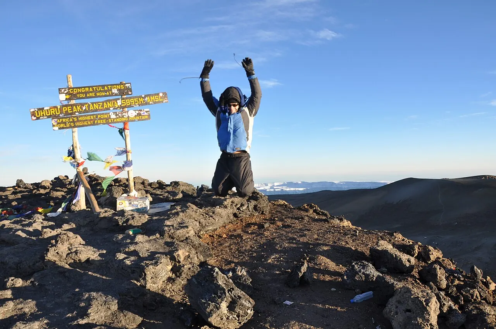
Photo: Jorge Láscar from Australia · CC BY 2.0 · Photographed 2009-03-21.
Resized and re-encoded to WebP for loading speed; CSS may crop the display. The adapted image remains available under CC BY 2.0.

Photo: Yann Macherez · CC BY-SA 4.0 · Photographed 2016-08-13.
Resized and re-encoded to WebP for loading speed; CSS may crop the display. The adapted image remains available under CC BY-SA 4.0.
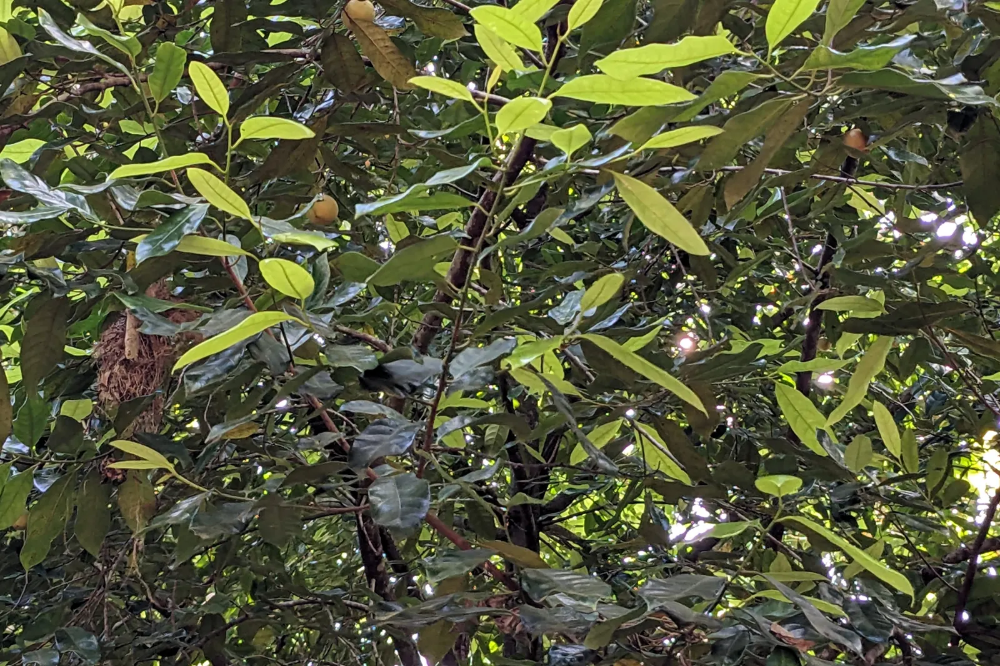
Photo: Bärbel Miemietz · CC BY-SA 4.0 · Photographed 2024-06-15.
Resized and re-encoded to WebP for loading speed; CSS may crop the display. The adapted image remains available under CC BY-SA 4.0.
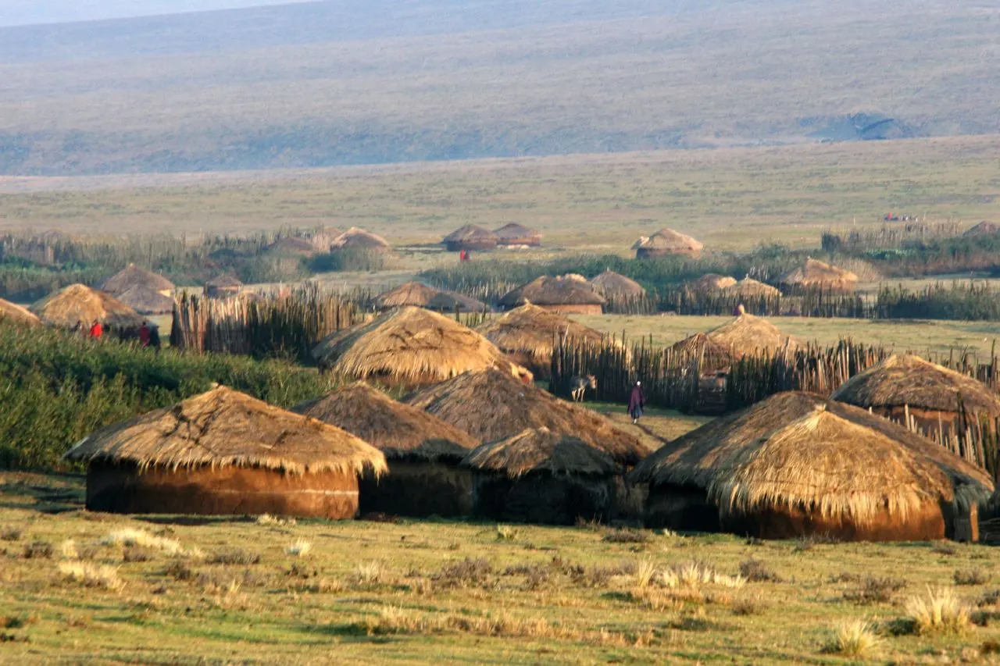
Photo: Guillaume Baviere (Giåm) · CC BY 2.0 · Photographed 2007-08-18.
Resized and re-encoded to WebP for loading speed; CSS may crop the display. The adapted image remains available under CC BY 2.0.
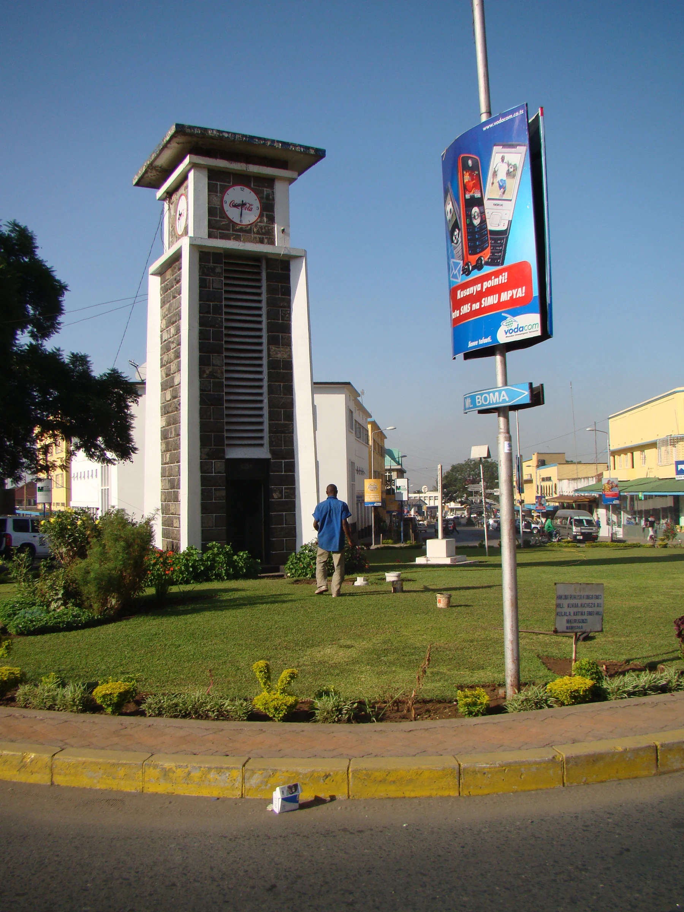
Photo: User:Digr / (WT-shared) Digr · CC BY-SA 3.0 · Photographed 6 January 2009.
Resized and re-encoded to WebP; no generative edits. CSS crops the displayed frame. Both WebP sizes retain the stated image licence. The adapted image remains available under CC BY-SA 3.0.
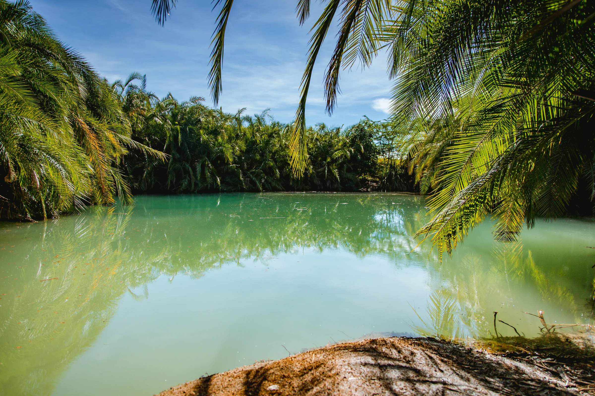
Photo: Daniel Msirikale · CC BY-SA 4.0 · Photographed 2018-04-11.
Resized and re-encoded to WebP; no generative edits. CSS crops the displayed frame. Both WebP sizes retain the stated image licence. The adapted image remains available under CC BY-SA 4.0.
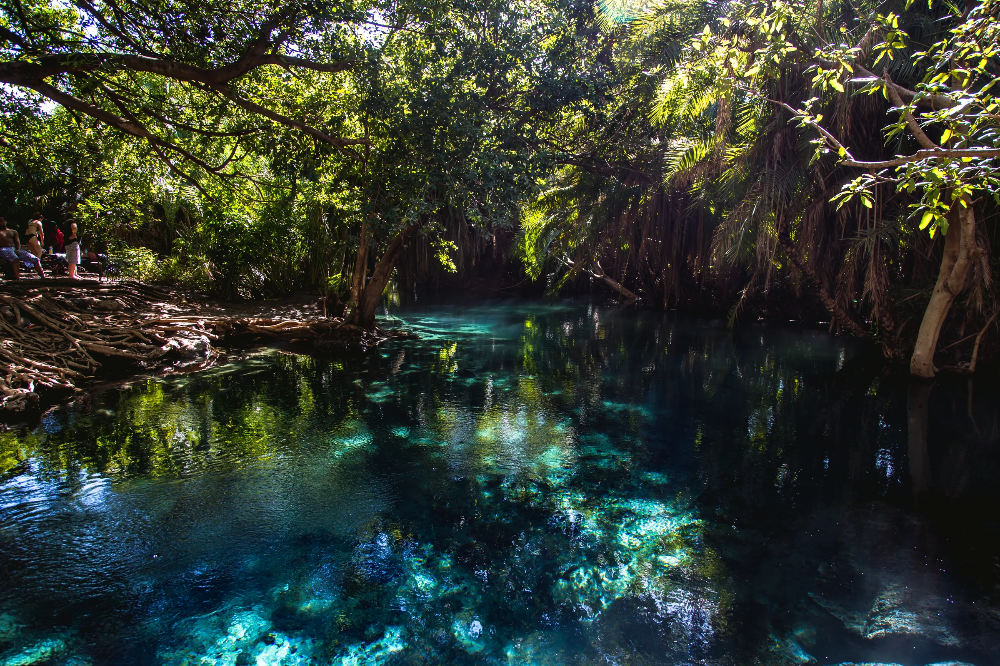
Photo: Daniel Msirikale · CC BY-SA 4.0 · Photographed 2018-04-11.
Resized and re-encoded to WebP; no generative edits. CSS crops the displayed frame. Both WebP sizes retain the stated image licence. The adapted image remains available under CC BY-SA 4.0.
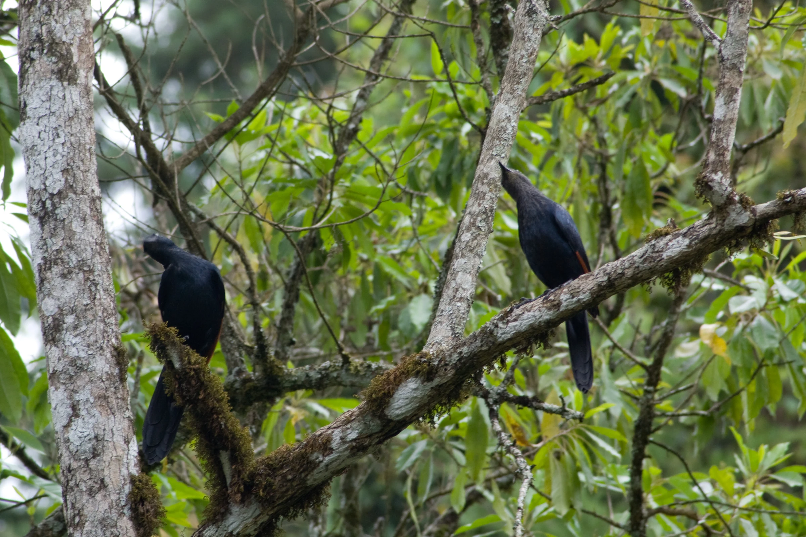
Photo: Fanny Schertzer · CC BY-SA 3.0 · Photographed 2007-10.
Resized and re-encoded to WebP; no generative edits. CSS crops the displayed frame. Both WebP sizes retain the stated image licence. The adapted image remains available under CC BY-SA 3.0.
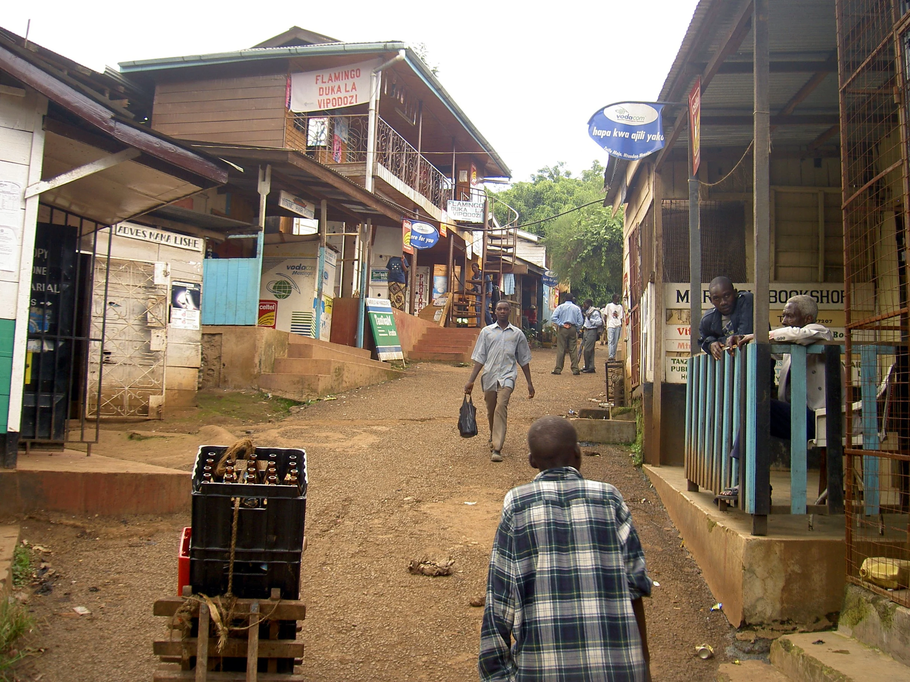
Photo: Chris 73 / Wikimedia Commons · CC BY-SA 3.0 · Photographed 2007-03-16.
Resized and re-encoded to WebP; no generative edits. CSS crops the displayed frame. Both WebP sizes retain the stated image licence. The adapted image remains available under CC BY-SA 3.0.
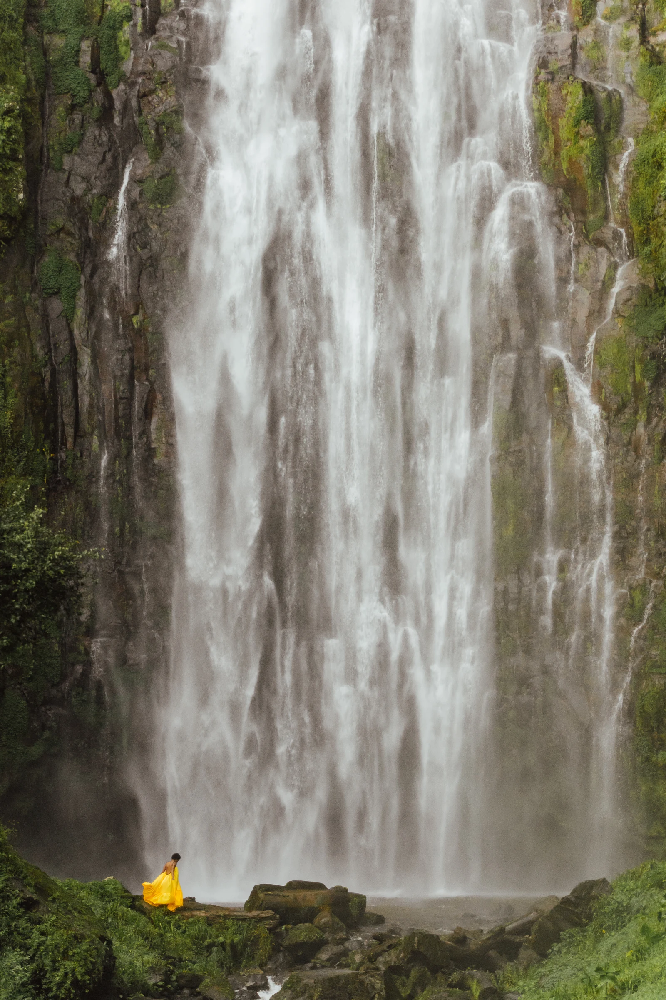
Photo: Daniel Msirikale · CC BY-SA 4.0 · Photographed 2018-04-10.
Resized and re-encoded to WebP; no generative edits. CSS crops the displayed frame. Both WebP sizes retain the stated image licence. The adapted image remains available under CC BY-SA 4.0.
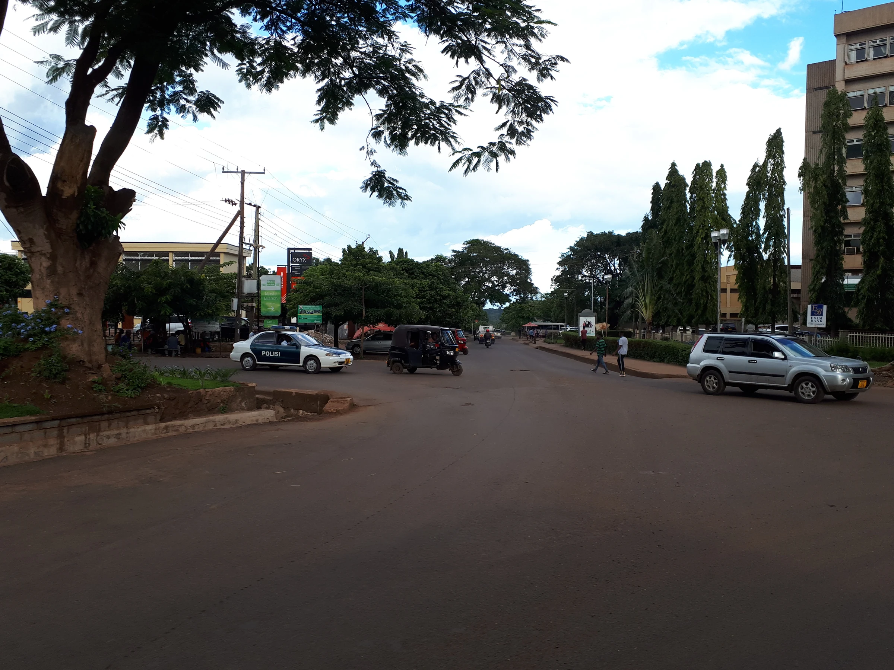
Photo: Raf24~commonswiki · CC BY-SA 4.0 · Photographed 2022-04-29.
Resized and re-encoded to WebP; no generative edits. CSS crops the displayed frame. Both WebP sizes retain the stated image licence. The adapted image remains available under CC BY-SA 4.0.
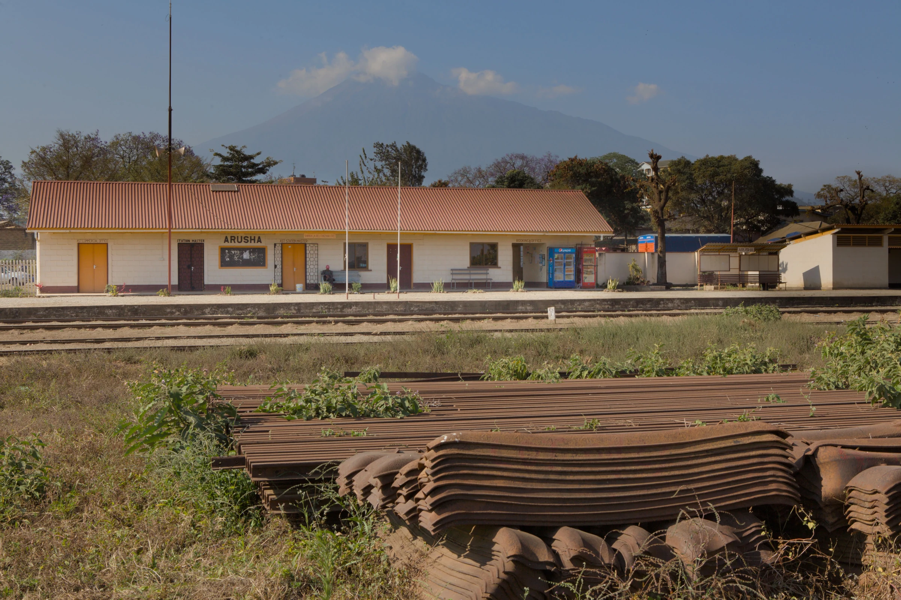
Photo: Harald Ulver · CC BY-SA 4.0 · Photographed 2024-08-06.
Resized and re-encoded to WebP; no generative edits. CSS crops the displayed frame. Both WebP sizes retain the stated image licence. The adapted image remains available under CC BY-SA 4.0.
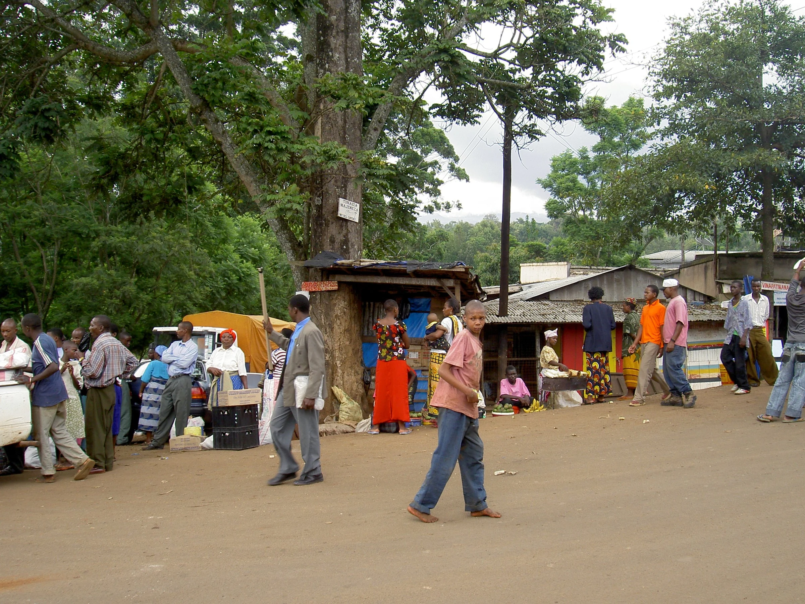
Photo: Chris 73 / Wikimedia Commons · CC BY-SA 3.0 · Photographed 2007-03-16.
Resized and re-encoded to WebP; CSS crops the display. WebP adaptations retain the same CC BY-SA 3.0 licence. The adapted image remains available under CC BY-SA 3.0.
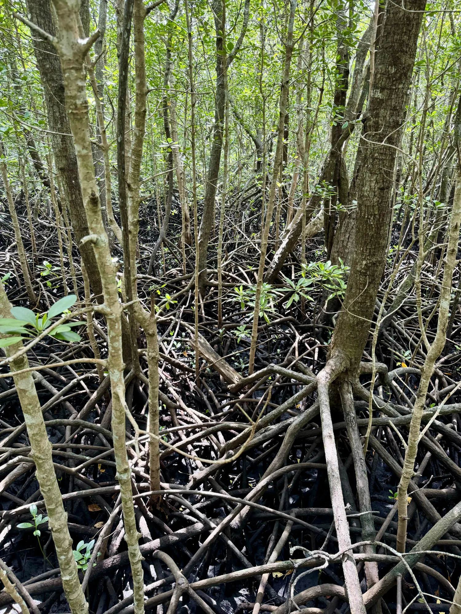
Photo: Mnazini · CC BY 4.0 · Photographed 21 December 2023.
Resized and re-encoded to WebP; no generative edits. CSS may crop the display. Both WebP sizes retain the stated image licence. The adapted image remains available under CC BY 4.0.

Photo: Mnazini · CC BY 4.0 · Photographed 21 December 2023.
Resized and re-encoded to WebP; no generative edits. CSS may crop the display. Both WebP sizes retain the stated image licence. The adapted image remains available under CC BY 4.0.

Photo: lazyweaver · CC BY 3.0 · Photographed Taken on 3 September 2011.
Resized and re-encoded to WebP; no generative edits. CSS may crop the display. Both WebP sizes retain the stated image licence. The adapted image remains available under CC BY 3.0.

Photo: Thomas Fuhrmann · CC BY-SA 4.0 · Photographed 30 August 2015.
Resized and re-encoded to WebP; no generative edits. CSS may crop the display. Both WebP sizes retain the stated image licence. The adapted image remains available under CC BY-SA 4.0.

Photo: Jorge Láscar from Melbourne, Australia · CC BY-SA 2.0 · Photographed Taken on 23 August 2019.
Resized and re-encoded to WebP; no generative edits. CSS may crop the display. Both WebP sizes retain the stated image licence. The adapted image remains available under CC BY-SA 2.0.
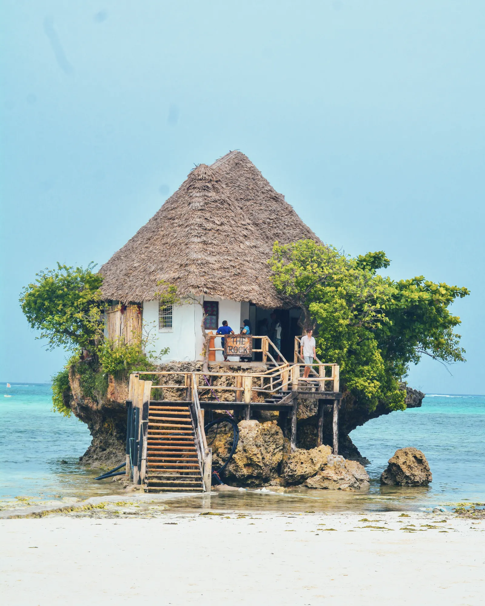
Photo: MASOUD OBI · CC BY-SA 4.0 · Photographed 1 April 2022.
Resized and re-encoded to WebP; no generative edits. CSS may crop the display. Both WebP sizes retain the stated image licence. The adapted image remains available under CC BY-SA 4.0.
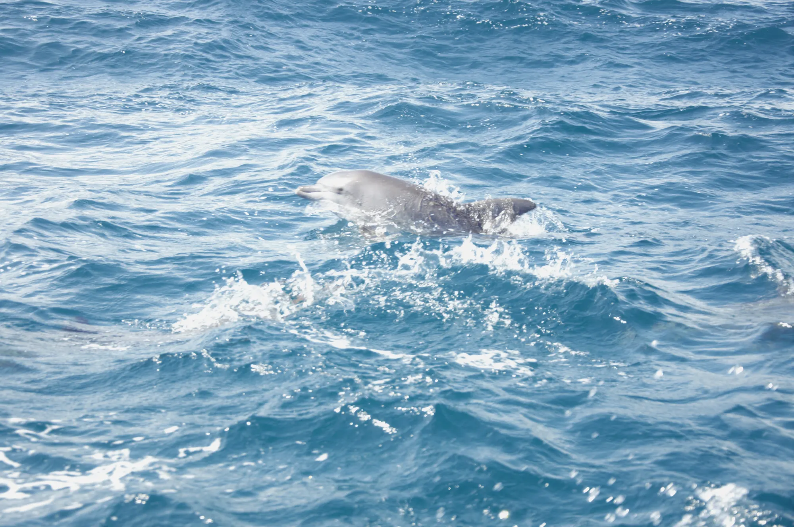
Photo: Prof. Chen Hualin · CC BY-SA 4.0 · Photographed 24 May 2015.
Resized and re-encoded to WebP; no generative edits. CSS may crop the display. Both WebP sizes retain the stated image licence. The adapted image remains available under CC BY-SA 4.0.

Photo: Jonathan Dalrymple · CC BY-SA 4.0 · Photographed Taken on 29 September 2018.
Resized and re-encoded to WebP; no generative edits. CSS may crop the display. Both WebP sizes retain the stated image licence. The adapted image remains available under CC BY-SA 4.0.
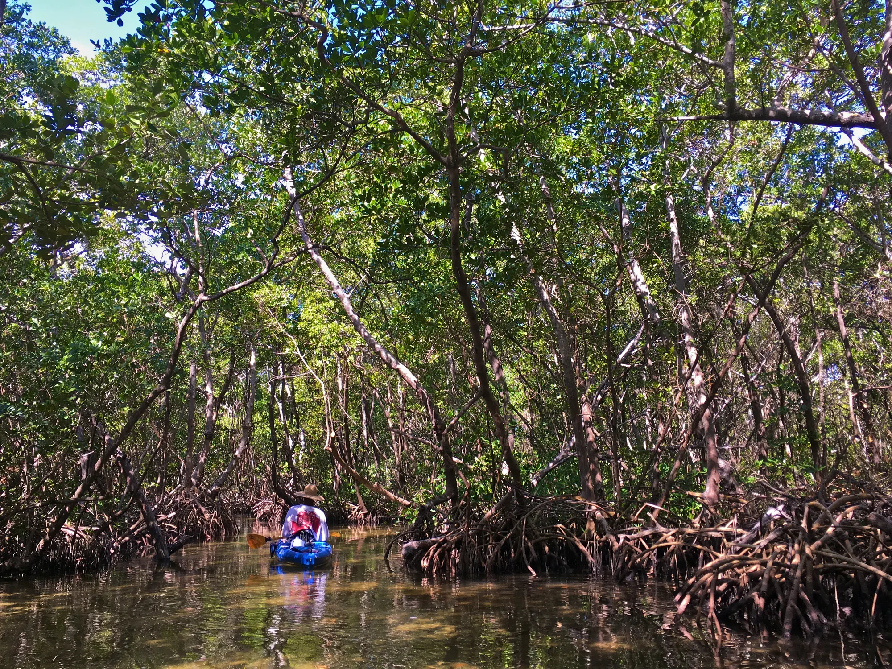
Photo: Fred Hsu on en.wikipedia · CC BY-SA 3.0 · Photographed 1 April 2017.
Resized and re-encoded to WebP; no generative edits. CSS may crop the display. Both WebP sizes retain the stated image licence. The adapted image remains available under CC BY-SA 3.0.
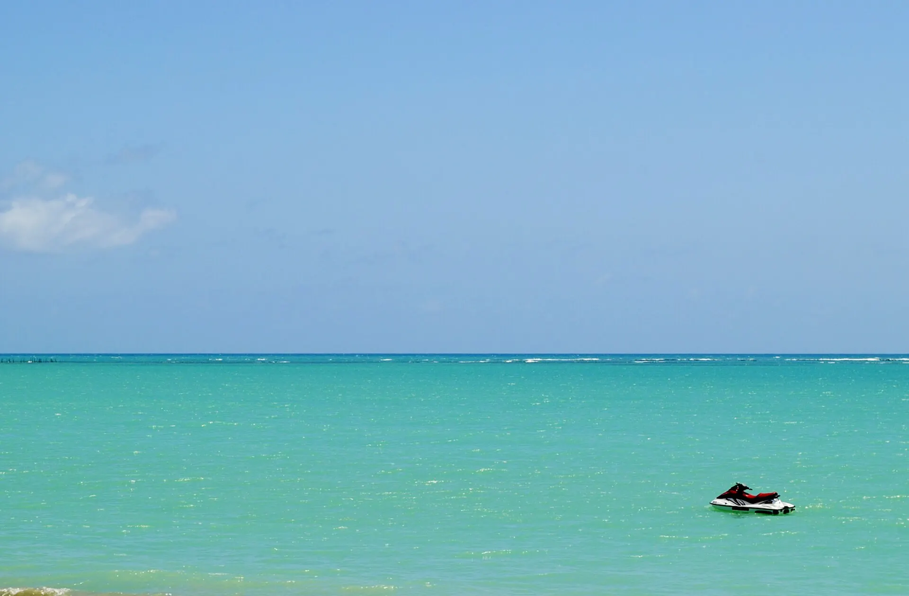
Photo: Cícero R. C. Omena · CC BY 2.0 · Photographed 25 December 2013.
Resized Wikimedia thumbnail and re-encoded to WebP; no generative edits. CSS may crop the display. Both WebP sizes retain the CC BY 2.0 licence. The adapted image remains available under CC BY 2.0.
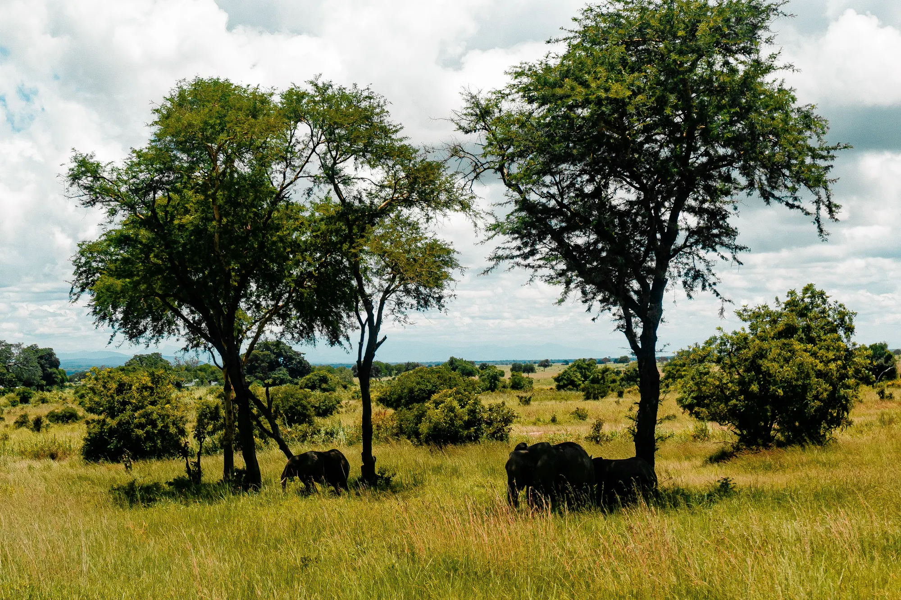
Photo: Rasheedhrasheed · CC BY-SA 4.0 · Photographed 19 March 2021.
Resized and re-encoded to WebP; no generative edits. CSS may crop the display. Both WebP sizes retain the stated image licence. The adapted image remains available under CC BY-SA 4.0.
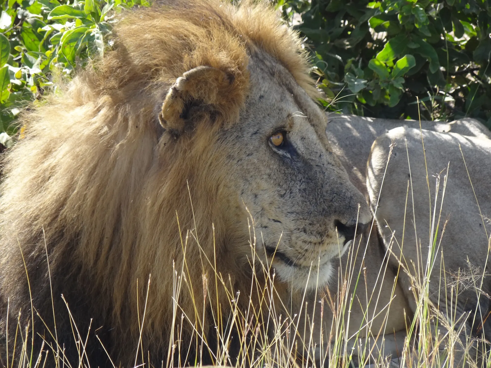
Photo: Adam Jones from Kelowna, BC, Canada · CC BY-SA 2.0 · Photographed 30 May 2013.
Resized and re-encoded to WebP; no generative edits. CSS may crop the display. Both WebP sizes retain the stated image licence. The adapted image remains available under CC BY-SA 2.0.
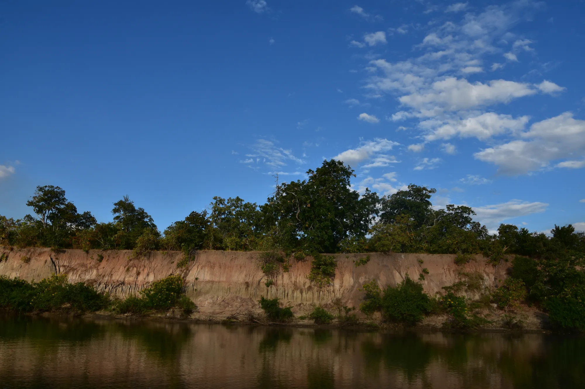
Photo: Richard Mortel from Riyadh, Saudi Arabia · CC BY 2.0 · Photographed Taken on 21 June 2016.
Resized and re-encoded to WebP; no generative edits. CSS may crop the display. Both WebP sizes retain the stated image licence. The adapted image remains available under CC BY 2.0.
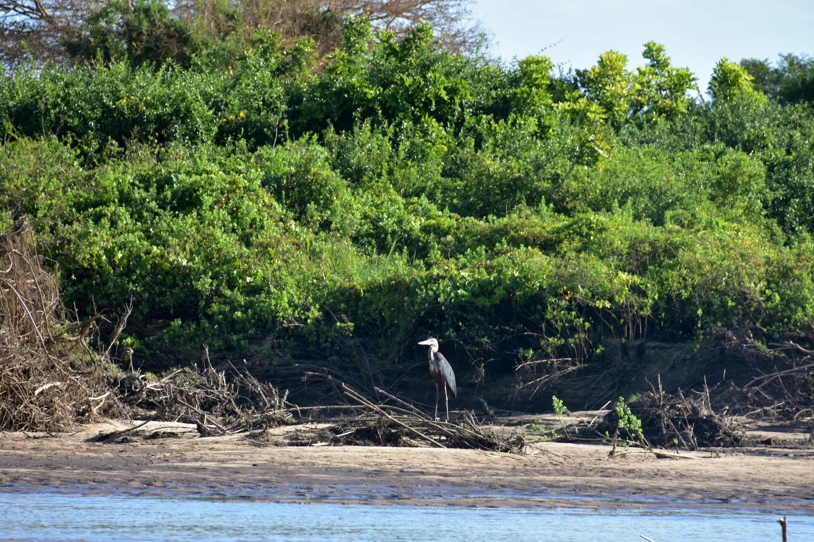
Photo: Richard Mortel from Riyadh, Saudi Arabia · CC BY 2.0 · Photographed Taken on 21 June 2016.
Resized and re-encoded to WebP; no generative edits. CSS may crop the display. Both WebP sizes retain the stated image licence. The adapted image remains available under CC BY 2.0.

Photo: Stefan Swanepoel · CC BY-SA 3.0 · Photographed 2008.
Resized and re-encoded to WebP; no generative edits. CSS may crop the display. Both WebP sizes retain the stated image licence. The adapted image remains available under CC BY-SA 3.0.
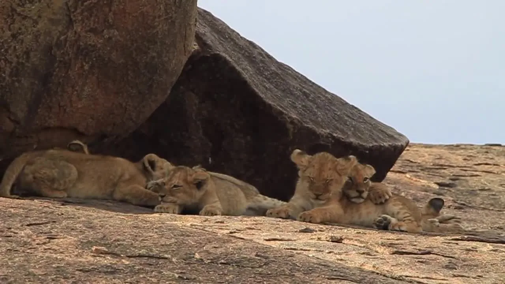
Film and poster: Bettina May · CC BY 3.0 · 17 April 2016.
Excerpt from seconds 5–17 of the original footage; audio removed; transcoded to 1280×720 H.264 MP4 at 24 fps. WebP poster extracted from second 5. No generative edits. The excerpt and poster retain CC BY 3.0. This is licensed destination footage, not a record of David’s clients or a guaranteed sighting.
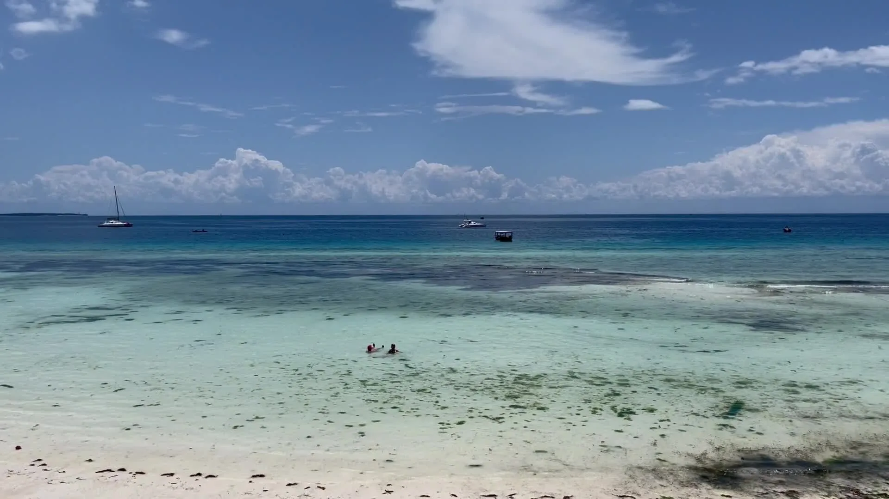
Film and poster: Ros NL · Pexels License · Source and licence checked 13 October 2026.
Excerpt from seconds 3–13 of real original footage; audio removed; encoded to 1920×1080 H.264 MP4 at 24 fps. WebP poster extracted from second 3. No AI or generative edits; no upscaling. This is licensed destination footage, not a record of David’s clients or a guaranteed sighting.
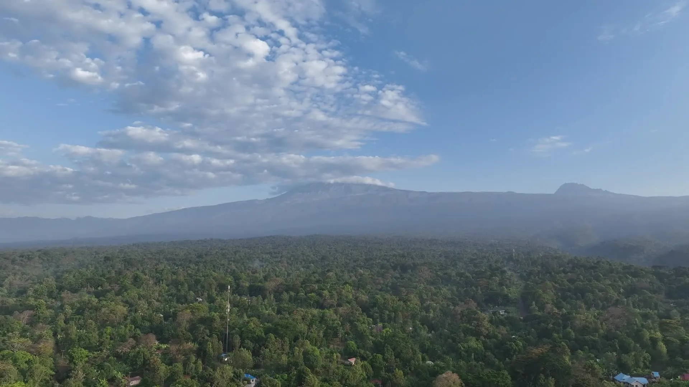
Film and poster: Alex Levis · Pexels License · Source and licence checked 13 October 2026.
Excerpt from seconds 3–approximately 13 of real original footage; audio removed; encoded to 1920×1080 H.264 MP4 at 24 fps. WebP poster extracted from second 3. No AI or generative edits; no upscaling. This is licensed destination footage, not a record of David’s clients or a guaranteed sighting.
.jpg){kind=link}

.jpg){kind=link}

.jpg){kind=link}

.jpg){kind=link}


_-_Arusha_(Tanzania).jpg){kind=link}